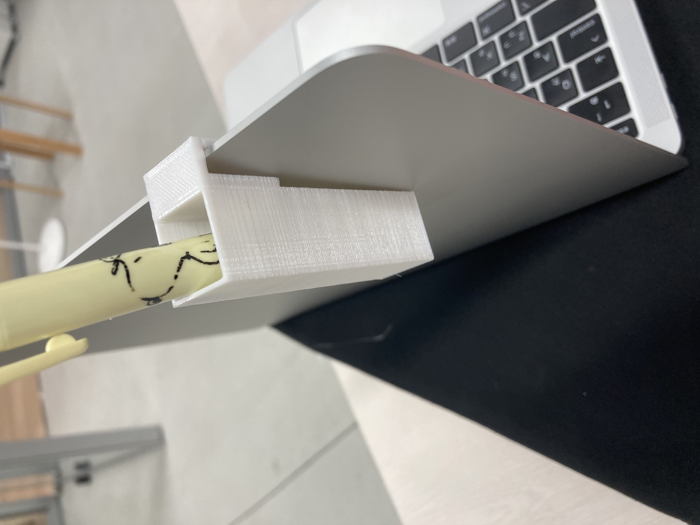
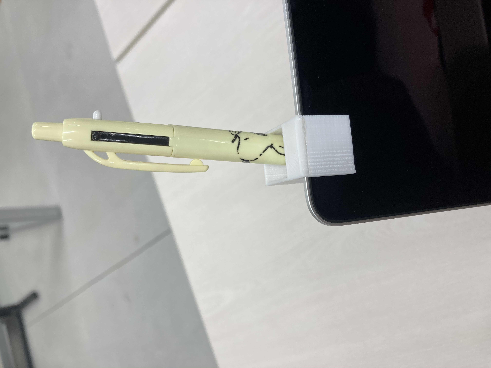
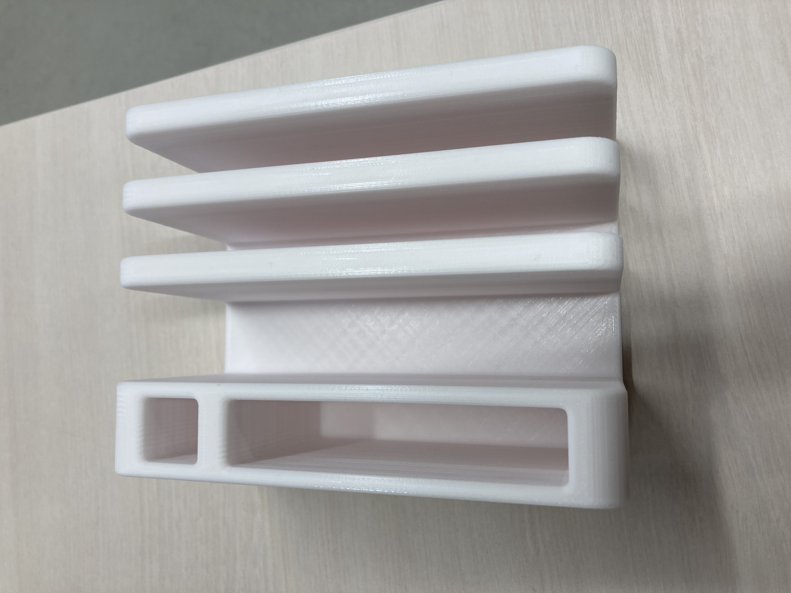
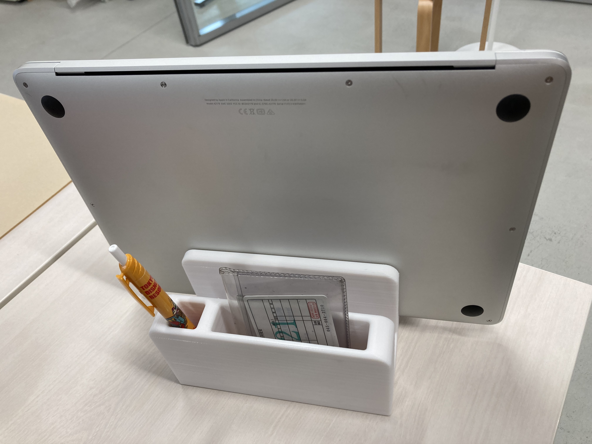
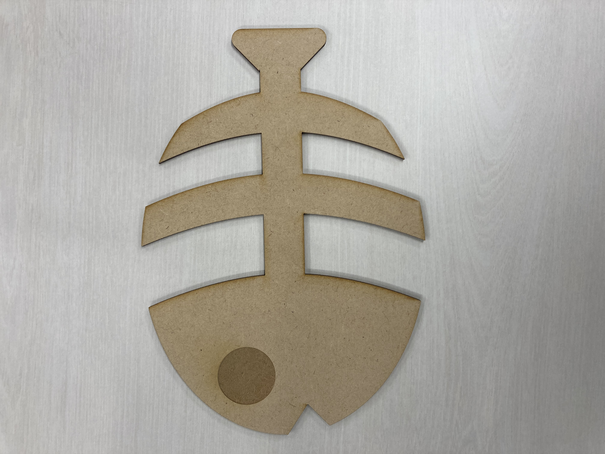

最終課題
日常生活を豊かにするもの
パソコンにつけられる収納
パソコンを使用する時に、スペースが狭い机で作業する時などにペンなどの小物を置く場所に困る事があったり、
どこかになくなってしまう事があり、パソコンの上のスペースをうまく使える方法はないかと思いました。


多機能スタンド
普通の本立てなどのスタンドではなく、パソコンや教科書、スマートフォンやペンなどを
シンプルに立てておけるスタンドがあると便利だと思いました。


魚の骨の鍋敷き
フライパンやお鍋を置く時に下に敷くものです。
魚の食べ終わりのようなデザインが面白くていいと思い作りました。
